Erfgoed & Locatie Historische Geocoder
Geocoder?
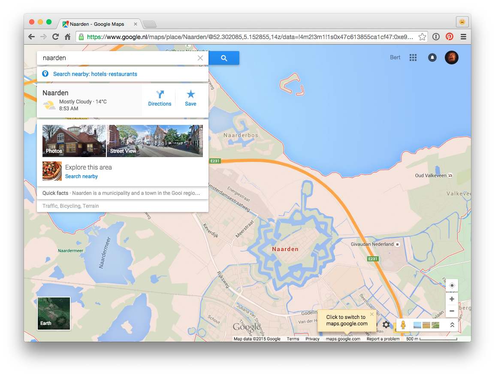Google Maps
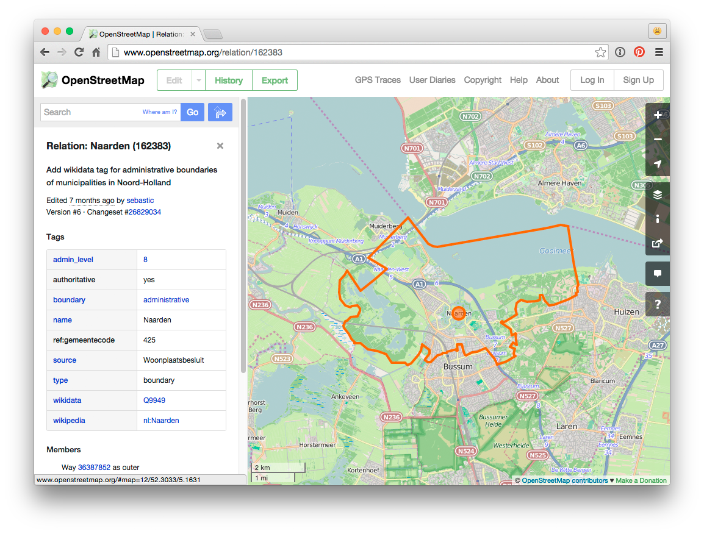OSM
Histograph
Voorbeeld: Naarden
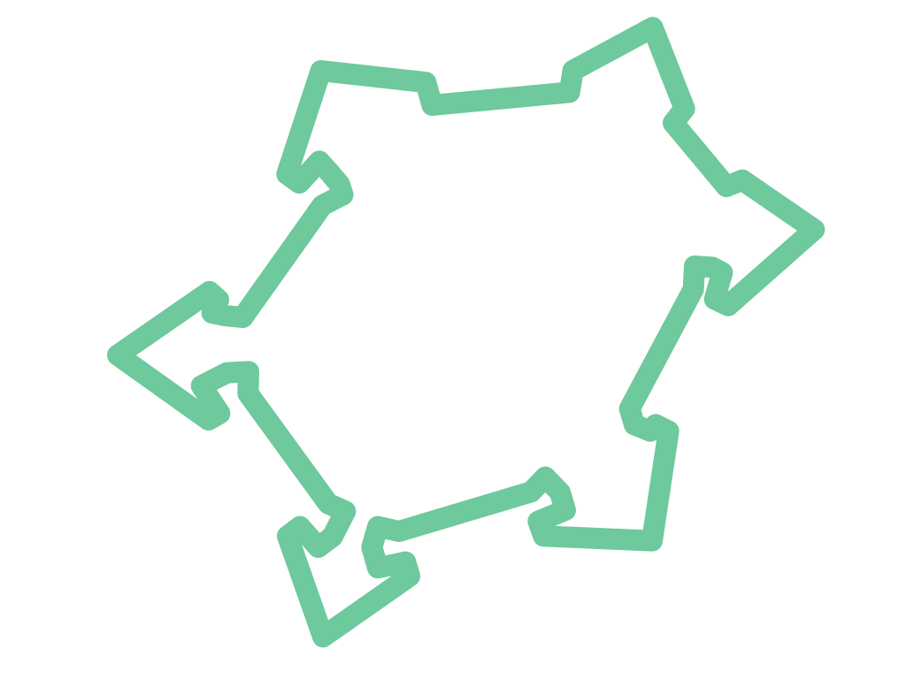Histograph
Naarden,
Neerden,
Naerden,
Neerden in Hollant,
Nairden
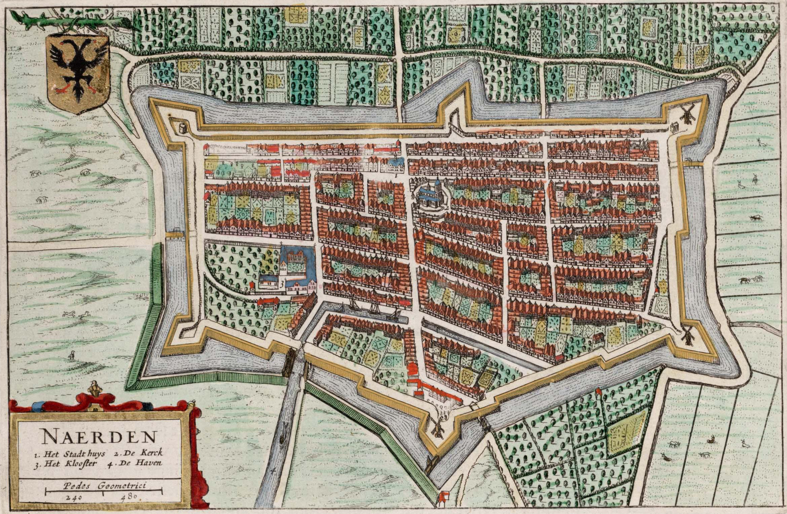Atlas van Loon
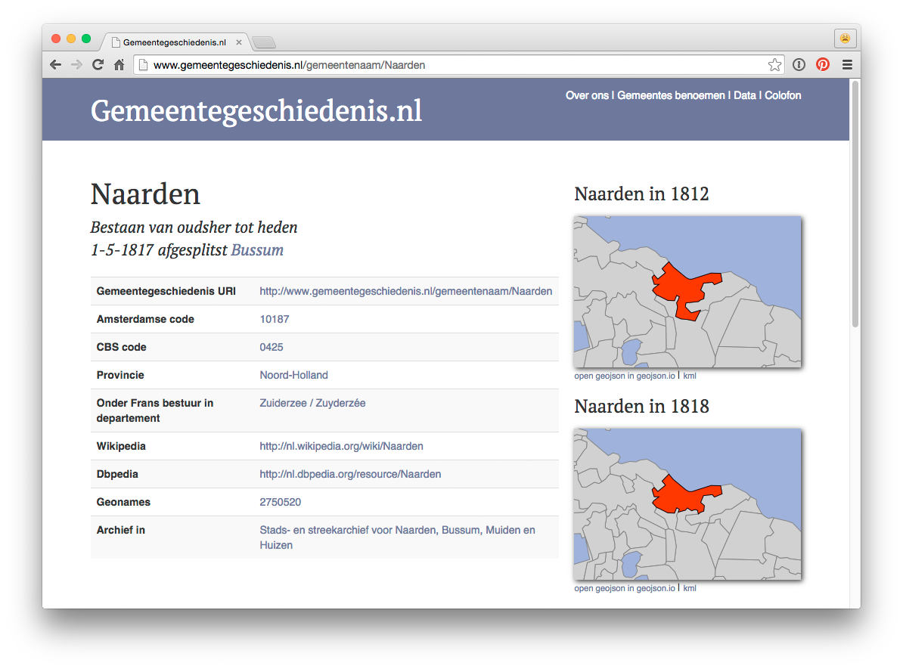Naarden - Gemeentegeschiedenis
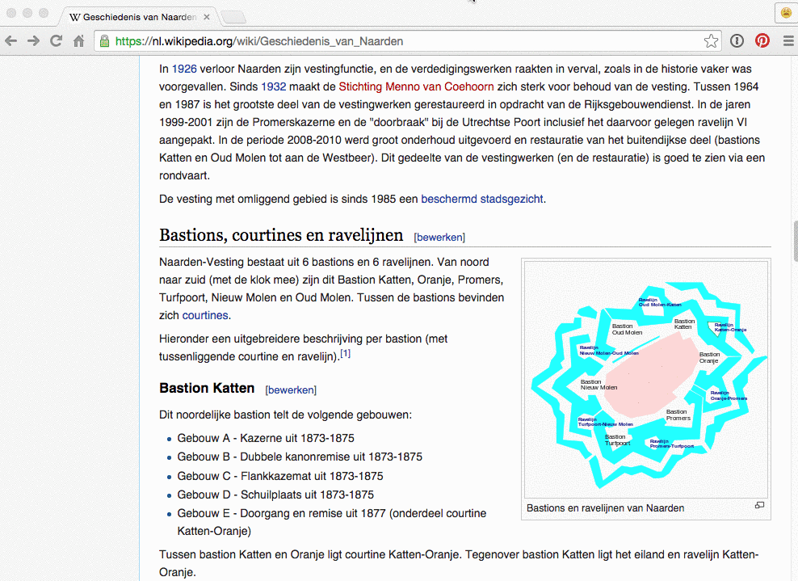Naarden - Bastions
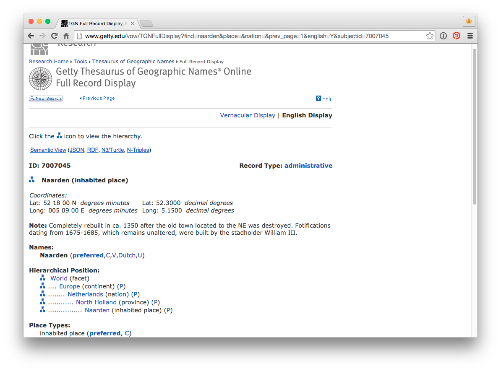Naarden - TGN
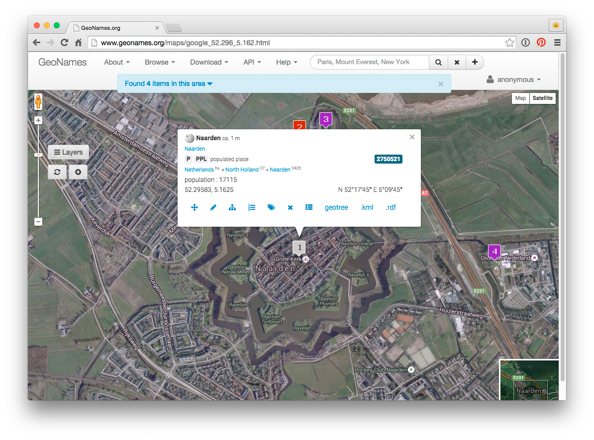Naarden - GeoNames
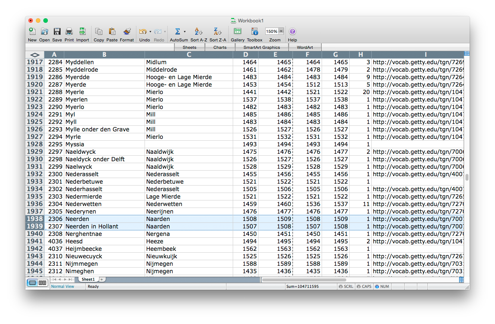Naarden - ILVB
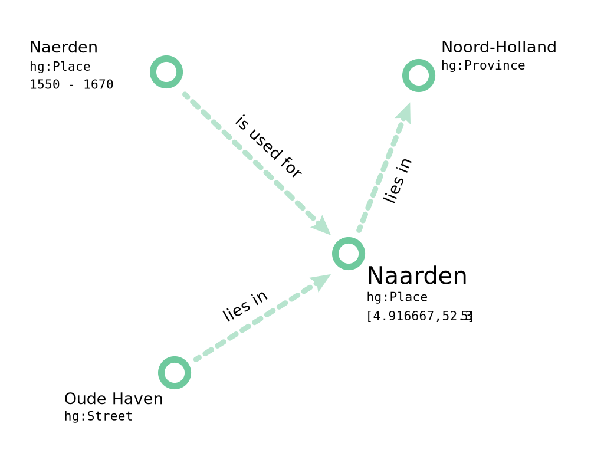PITs
Plaatsen, straten, gewesten, graafschappen, provincies, monumenten, kastelen, straten, adressen!
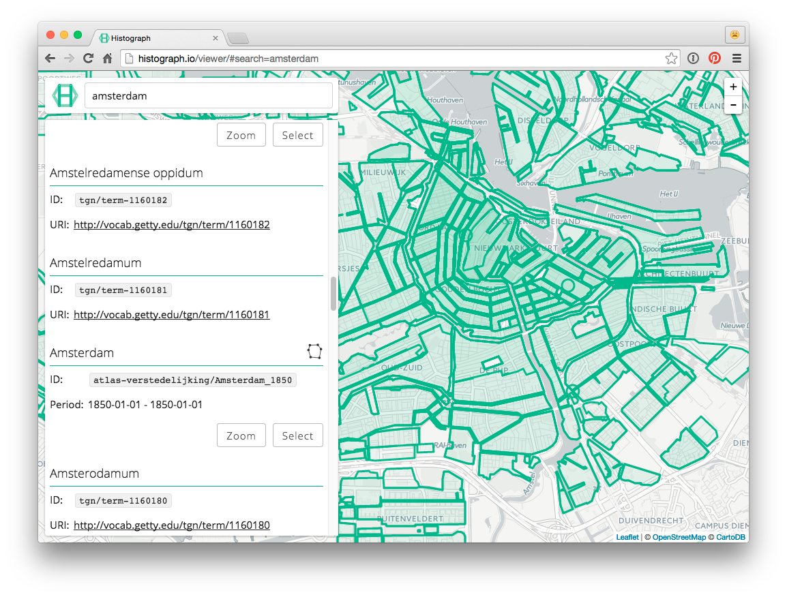Viewer
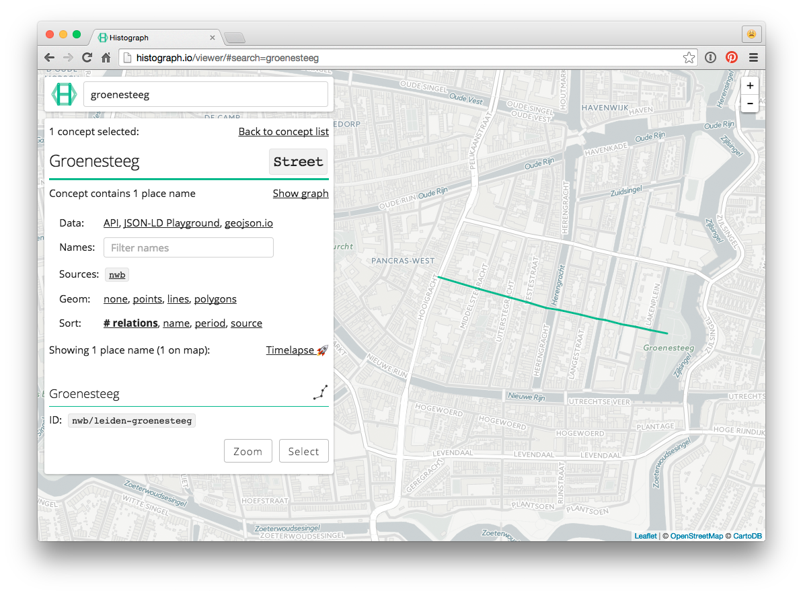Viewer
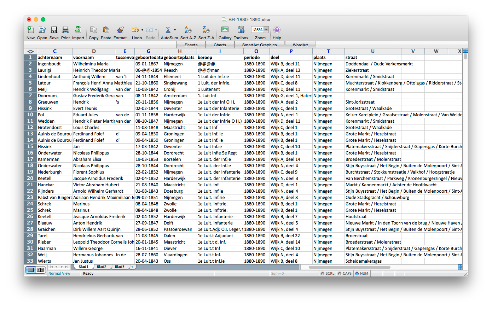Nijmegen